00读前一分钟 · 全文脉络（做完题再看也行）
📌 结构套路：结论（①②）→ 方法（③）→ 三条发现（④⑤⑥）→ 局限与展望（⑦）——标准的研究报道型新闻。五题顺序：21①②、22③（答案要看④–⑥）、23⑤、24⑥、25⑦；④段不单独出题，却同时是 23 和 24 的伏笔。
📌 本篇最值钱的一条规律：对照实验的文章，每个特征词先标「目标组」还是「对照组」。记者甚至替你标好了——引语里的方括号 [control]、[target] 就是记者补进去的组别。五题里三题的干扰项都在「组别」上做手脚：23C、23D 把目标组的「入戏自如」「复杂罕见词」挪给了对照组；24A 的 imagine 在④❷ 里恰恰是对照组的做法；22B、22C 把结果（词汇、情感）挪成了原因。⟹ 2008·T1 立过的 R19「对比段先给每个特征词标主语」，今年原样再考一次。
📌 和 2024 T1 比一比：两年的 Text 1 都是英国大报（2024《金融时报》专栏、2025《泰晤士报》新闻）；2024 是作者亮观点的专栏，坑在「让步的前半句」；2025 是零作者观点的研究报道，靠一个说话人（奥汉隆）的引语推进，坑在「哪一组」。
01原文精读
🟡 黄色高亮 = 重难点词/短语，点击右侧出卡片 ｜ 蓝色虚线 = 长难句，点击跳到精析 ｜ 每段「意」= 段落意译 ｜ 选中任意其他单词浮出「查有道」 ｜ 原文由你的浏览器从原卷识别成文字（首次约 3 秒，之后秒开）；「原卷对照」可逐句看扫描原图、改识别错字
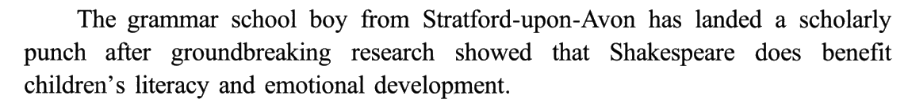
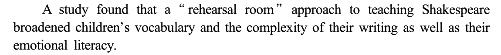
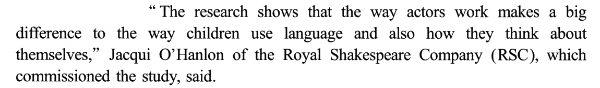
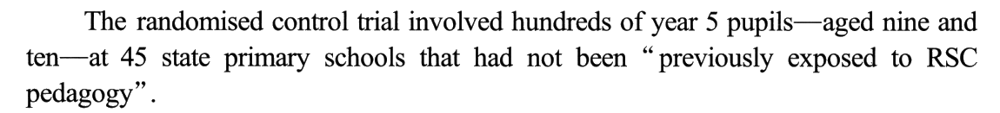
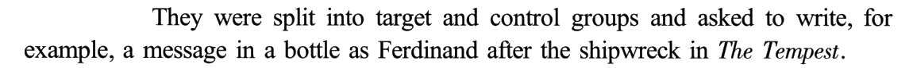
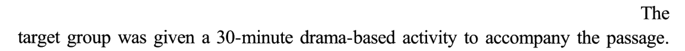
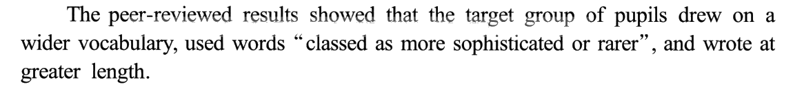
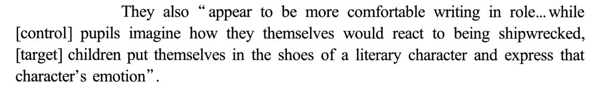
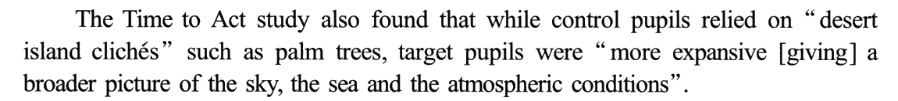
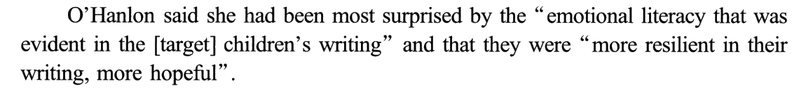
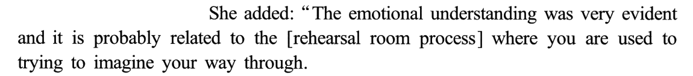
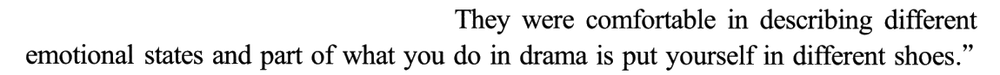
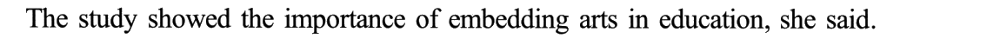
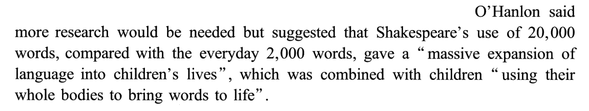
02题目与解析（点选项即判 · 再看解析）
条件细节21. The “rehearsal room” approach requires pupils to ______.
干扰项：A 从②❶ the complexity of their writing 联想到「写」，再拼上 Shakespeare，编出「改写莎剧台词」——研究测的是孩子自己的写作，任务是以剧中人身份写信，不是改写原文；⚠️ lines 在这里是「台词」（熟词僻义）。B 把 the way actors work 读成「看演员演」——演员的工作方式 ≠ 演员的演出，排练室法是让孩子自己演，不是当观众。D 拼的是②段的零散词：teaching Shakespeare ＋ RSC ＋ commissioned——RSC 只是委托做研究的机构，原文没说 RSC 艺术家亲自教孩子（实际授课的是受过训的学校老师，见背景）。
技巧：题干动词是 requires / depends on / is necessary for，就去找原文的条件标记：only if / only when / unless / as long as；本篇这个条件放在第一段最后一句、还是个三词的短句，最容易一眼带过。条件题的干扰项常是「和条件同一个场景、但做事的人换了」——B 换成演员、D 换成艺术家（参见 R123「条件题」）。
📕 与书解析的商榷：无分歧。书在「技巧总结」里把三个句子并成「方式 X → 结果 Y」（Y but only if X · X broadened Y · X makes a big difference to Y），三处的 X 都指向「学生结合角色扮演学莎剧」——这正是本题最省力的读法。
研究目的22. The study divided the pupils into two groups to find whether ______.
干扰项（每个都错在 X 或 Y 上）：B 的 X「扩大词汇」本是研究的结果（④❶ wider vocabulary），被挪到了原因的位置；Y「阅读流畅度」研究根本没测——测的都是写。C 同理：「情感」是结果（⑥❶ emotional literacy），被挪成原因；「理解复杂作品」也没测（④❶ 的 sophisticated 修饰的是孩子用的词，不是读的作品）。D 的 Y「对艺术的兴趣」没测；它的料来自⑥❹ the importance of embedding arts in education，原文是「艺术 → 进教育」，D 写成「课堂活动 → 激发艺术兴趣」，箭头反了；而且那句是研究做完后的意义，不是分组时的目的。
技巧：对照实验的「目的题」只问一件事——两组唯一的差别（X）是否带来了被测的结果（Y）。正确项往往写得最抽象（the change in instruction / learning outcomes），因为它要罩住全部发现；具体的选项反而多半是把某个结果搬到了原因位上。⟹ 新立 R320；与 R67「方法句列候选、结论句给胜出项」同源。
📕 与书解析的商榷：书判 D 为「颠倒因果」，对；可以再补一层——⑥❹ 是奥汉隆对研究意义的引申，题干问的是分两组时的目的，即便方向不反，「研究意义」也答不了「为什么分组」。
对比推断23. Control pupils’ reliance on “desert island clichés” shows their ______.
干扰项：B 把两组的对比读成了同一组的两面——「只顾套话大场面、漏了小细节」；原文对照组的毛病是套，目标组的长处是广（broader picture），没人提「小细节」，方向也不对。C 和 D 都是组别错位：C 的料是④❷ more comfortable writing in role——那是目标组入戏自如，被曲解成对照组「文风随意」；D 的料是④❶ “classed as more sophisticated or rarer”——用复杂罕见词的也是目标组，被偷换成对照组「偏爱大词」，正好说反。
技巧：对比段读的时候在旁边画两栏，给每个特征词标「目标组」还是「对照组」（R19）；本篇记者已经用方括号替你标好了——④❷ 引语里的 [control]、[target]，⑤❶ 的 control pupils / target pupils。再看比较标记：wider、more sophisticated、greater length、more expansive、broader 全是比较级，比较级的主语永远是目标组。
⚠️ 盲做时 A、B 排过一下：B 的「小细节」看着像在解释「套话」，判据是它和目标组的长处对不上——目标组赢在「广」，不是赢在「细」。
📕 与书解析的商榷：书把本题标为「事实细节＋写作目的」；严格说题干 shows their ___ 问的是「说明了什么」，属推断概括——答案在原文里没有原词，要把三重比较的结果归纳出来（书的「技巧总结」本身也是这么讲的）。
因果观点24. What can promote children’s emotional literacy according to O’Hanlon?
干扰项：A 是本题最像的一项，抓的是⑥❷ 的 imagine。但⑥❷ 的「想象」是想象自己作为剧中人怎么走过这一程，落点在「入戏」，不在「怎么写」；更硬的一条在④❷：[control] pupils imagine how they themselves would react——对照组也在「想象」，想的是「换我自己会怎样」；两组的分水岭不是想不想象，而是代入的是自己还是角色。所以「以想象的方式写作」恰恰是对照组也在做、却没换来情感素养的那件事。C 借⑤❶ 天空、大海、天气——那是描写的广度（23 题），和情感无关，更没说灵感来自自然。D 把 put yourself in different shoes 望文生义成「关注现实生活」——鞋子是角色的鞋，正好不是现实生活；⑦❷ 的 whole bodies 讲的是学词的方式，也不是现实情境。
技巧：人物观点题先找说话人自己的解释句（related to / because / it is due to），再沿着 where 从句、下一句的具体说法一路落到最具体的那个动作；遇到在两组身上都出现的动作（本篇的 imagine），它一定不是区分两组的原因。
⚠️ 盲做时 A、B 排过一下：imagine 在⑥❷ 原词复现，A 看着「有原文」——判据就是④❷ 那个 [control]。
📕 与书解析的商榷：无分歧，且书判 A 用的正是④❷「[control] pupils imagine」这一句——这是本题最漂亮的一条排除依据，值得记住。
末段推断25. It can be inferred from the last paragraph that ______.
干扰项：B 把「两万词」读成了负担——原文说的是扩展（massive expansion of language into children’s lives），是好处不是吓人；formidable 方向反。C 从❶ 的 any old dramatist 编出「其他老剧作家可能进入小学课堂」——❶ 只是个问题，❷ 的回答没有往这个方向走一步。D 也从❶ 编：「学生可能不愿学别的老剧作家」——原文只谈莎剧的特点，一个字没提学生愿不愿意、也没谈别的剧作家难不难。
技巧：末段「设问 ＋ 回答」，答案在回答里；回答里有 but，就只读 but 之后。再问一句「她给的理由是普遍的，还是这个对象独有的」——理由全是独有的，结论就是「最适合这一个」。
📕 与书解析的商榷：⑦❶ 的 any old dramatist，书译作「任何一位古老剧作家」。英式口语里 any old ＋ 名词 是固定说法，意思是「随便哪个、无论哪个」，old 不一定是「古老」——这句更自然的读法是「随便换个剧作家行不行」。不过 C、D 两项都写作 other old dramatists，命题人是按字面「老剧作家」处理的；两种读法都不改变答案。
03长难句精析（正文蓝色虚线句）
- 主干：
The grammar school boy … has landed a scholarly punch——主谓宾；主语是个借代：「斯特拉特福来的文法学校男孩」＝莎士比亚（他生在埃文河畔斯特拉特福、上过当地文法学校）。新闻开头不点名、先让读者猜，是英国报纸的常见开法。 land a punch：拳击用语「打中一拳」；scholarly把它挪到学术圈——「在学术上漂亮地赢了一回」。after引导时间状语从句，从句里showed that再带一个宾语从句：Shakespeare does benefit …——does ＋ 动词原形是强调，「确实有益」，暗含「以前有人怀疑过」。
- 直接引语在前、说话人在后：
“…,” Jacqui O’Hanlon … said——引语后置、主谓在最后，读的时候先跳到句末找 said 的主语，再回头读引语。 - 引语内 主干：
The research shows that …，宾语从句的主语是the way actors work（省略了 in which 的定语从句），谓语makes a big difference to。 - difference to 后面接两个并列宾语：
the way children use language和how they think about themselves，用and also连——一个名词短语、一个 how 从句，形式不对称但意思并列。 - 说话人后挂一个非限制性定语从句：
which commissioned the study，先行词是 RSC 而不是奥汉隆本人——委托研究的是剧团（21D 就是把这个机构的角色夸大成「亲自教学」）。
- 主干：
The randomised control trial involved hundreds of year 5 pupils——involve 在这里是「涉及、有……参加」。 - 两个破折号之间
aged nine and ten：插入的同位说明，交代年龄；读的时候可先跳过。 at 45 state primary schools后接that had not been “previously exposed to …”：定语从句修饰 schools，过去完成时被动——「此前从未接触过 RSC 教学法」。这个条件是对照实验的关键：排除「本来就熟悉这套方法」的干扰。- 英式拼写与学制：
randomised（美式 randomized）·year 5（英国学制五年级）·state school（公立学校）。
- 主干：
They also “appear to be more comfortable writing in role …”——be comfortable (in) doing「做……很自如」；in role「以角色身份」。 - 省略号后是引语里另一段：
while [control] pupils imagine how …, [target] children put themselves in the shoes of …——while 表对比，前后两组各一个分句。 - 方括号是记者补进引语的词：原报告里大概只写 pupils / children，记者怕读者分不清，补上组别。⟹ 读对照实验的引语，先看方括号定组别。
- 两组的分水岭就在这两个分句的宾语上：对照组
how they themselves would react（代入自己）vs 目标组the shoes of a literary character（代入角色）。24 题的答案和 A 项的排除，都在这一句。
- 主干：
The Time to Act study also found that …——Time to Act 是研究的名字（双关：「该行动了」／「表演的时刻」）。 - 宾语从句内部又是 while 对比：
while control pupils relied on …（对照组）,target pupils were “more expansive …”（目标组）。 such as palm trees举例说明「荒岛套话」；方括号[giving]又是记者补的词，把形容词 expansive 和后面的 picture 接起来——没有它，引语读不通。- 本句是 23 题的唯一出处：两组一贬一褒，答案 weakness in description 是把这组对比概括出来的。
- 引语内两个并列分句，
and连接：①The emotional understanding was very evident；②it is probably related to the [rehearsal room process]——probably 是她的推测，不是研究结论。 where引导定语从句修饰 process（「在这个过程中」）：you are used to trying to imagine …——⚠️ be used to doing「习惯于做」，to 是介词，后接 trying；别和 used to do（过去常常）混。imagine your way through：仿 动词 ＋ one’s way ＋ 介词 句式（make one’s way through 挤过去、fight one’s way out 杀出来）——「靠想象一步步走过（那个处境）」。
- 两个并列分句：①
They were comfortable in describing different emotional states；②part of what you do in drama is put yourself in different shoes。 - 第二个分句的主语是
part of what you do in drama（what 从句作 of 的宾语）；系动词 is 后的表语put yourself …是省略 to 的不定式——主语里有 do 时，表语不定式常省 to（All I did was ask a question.）。 put yourself in different shoes：习语 put oneself in sb’s shoes 的变体，「设身处地」——24B identifying with 的直接出处。
- 主干：
O’Hanlon said … but suggested that …——两个谓语 said / suggested 由 but 连接，语义重心在 but 之后（said 后是让步：还需更多研究）。 - suggested 的宾语从句：主语
Shakespeare’s use of 20,000 words，插入比较状语compared with the everyday 2,000 words，谓语gave a “massive expansion …”——主谓被插入语撑开。 - 末尾
which was combined with …：非限制性定语从句，先行词是前面整件事（大词汇量带来的扩展）；children “using their whole bodies …”是 with ＋ 名词 ＋ doing 的复合结构（孩子们用整个身体……）。 - ⚠️ suggest that 在这里是「表明、认为」，不是「建议」——所以从句用陈述语气 gave，不用虚拟（should give）。
04词汇复盘（点卡片看详情）
05可搬进作文/翻译的素材
本篇话题——做中学、艺术教育、共情能力——正对大作文里的「教育方式」「实践与理论」「美育」「换位思考」类题目，也能给小作文里「推荐课程／活动」垫理由。英文例句都是按原文句式自拟的，只借骨架。